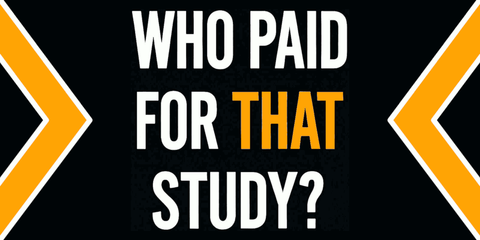

Who paid for that study: science & business
Article written starting from a LinkedIn post published on the same day as a reshare of a Stephen Klein post about the same topic.
Source(s) of funding should be disclosed like bibliography
I agree that knowing the source of funding is essential and should be included in every paper like we usually do with bibliography. We do bibliography not just to count how many times a paper or an author got hits but to track down the source of knowledge and have a tree of them.
It is essential because when we find a mistake in one of them, we can track down its impact in all the other papers that have been influenced by it. From a scientific point of view, unreliably bibliography is equivalent to jeopardise the fix & progress cycle.
The transparency in scientific funding and the need to be publicly tracked like bibliography for others work reference, is analysed within a
dialouge with Gemini and its
transcription
About sugar and AI hype topics
In the Stephen Klein post are cited two topics. The sugar promotion into the food industry and the AI adoption hype. Let me propose you two articles of mine about, in the next comment (here below)
The role of the sugar in human food, might be underestimated as responsible for maligne cancer outbreaks. A single interpretation mistake can have caused a chain of failures in science. I may be right or wrong, but this is the kind of example I was writing above about bibliography.
Zucchero, alimentazione e salute (2024-09-24)
Instead, this is how AI can deal with unfiltered data and leveraging a progressive improving cycle makes them useful to feed an AI system.
Fix your data is a postponing excuse (2025-05-08)
This second article shows the importance of having a self-improving process cycle. Which directly refers by analogy to the fix & progress cycle and it raises a question: we know how to do right when dealing with stuff (data management) but we fail when dealing with systems (science & university).
Partial or voluntary disclosure
They are disclosed in all reputable journals
It is nice to know, but also in every article, specifically? Time to time, I read some scientific articles. Sometimes, those who wrote it, implicitly acknowledge the readers the source of funding.
Sometimes, especially when it is a public foundation, they clearly state something like a budget (or a medal). However, by my own experience (which can be limited or not be aligned with the mainstream aka be a corner case), the bibliography section is usually standardised, while the chain of funding sources is not.
Company ($$$$$) → NGO ($$$$) → University ($$$) → Department ($$) → Paper ($)
This above is an exemplified disclosing chain of funding sources. Because, the study behind the paper received a tiny financial support but the university which provides a stable position to the author of the paper might be involved in a way deeper.
However, this disclosure schema can be circumvented, in many ways and the most classic is inverting the cause-effect relationship: the paper is published, then the department in which the authors are working receive substantial financial help.
Conclusion
Science needs transparency also about business influence and at this time there is not an universal way to track back funds in a way bibliography does for the source of information. Partial or voluntary disclosure is not enough and the example proposed works in bona-fide.
Anyway, a good starting point is better than nothing.
Share alike
© 2025, Roberto A. Foglietta <roberto.foglietta@gmail.com>, CC BY-NC-ND 4.0